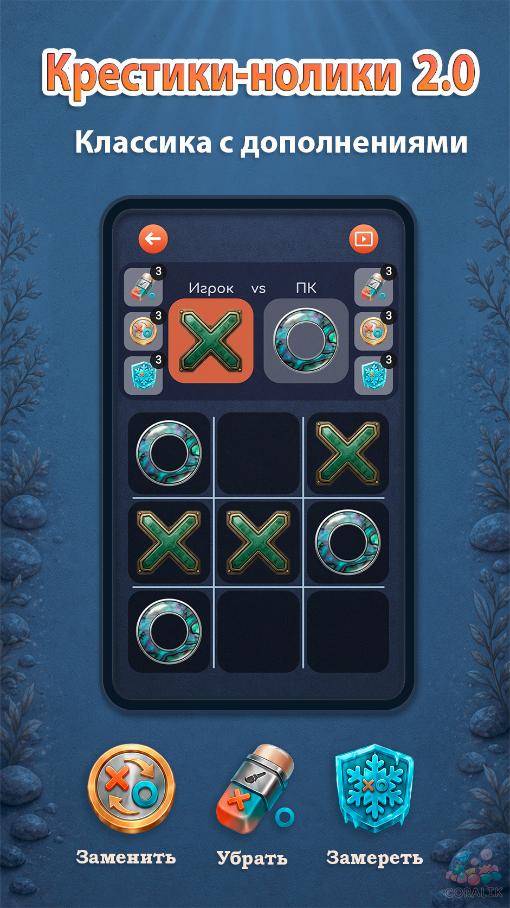
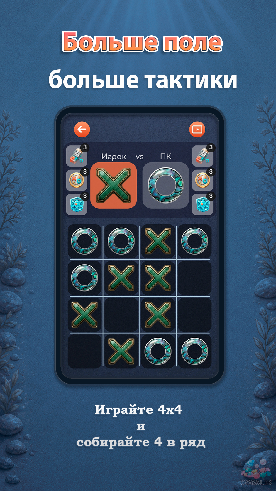
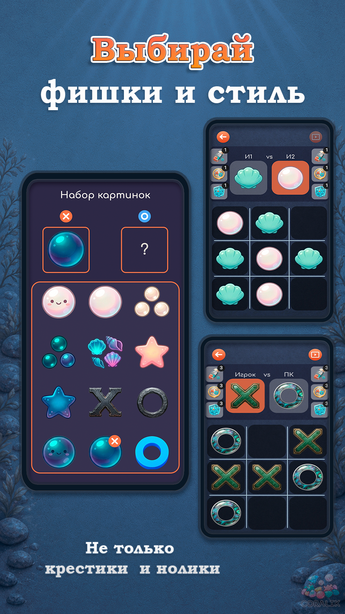
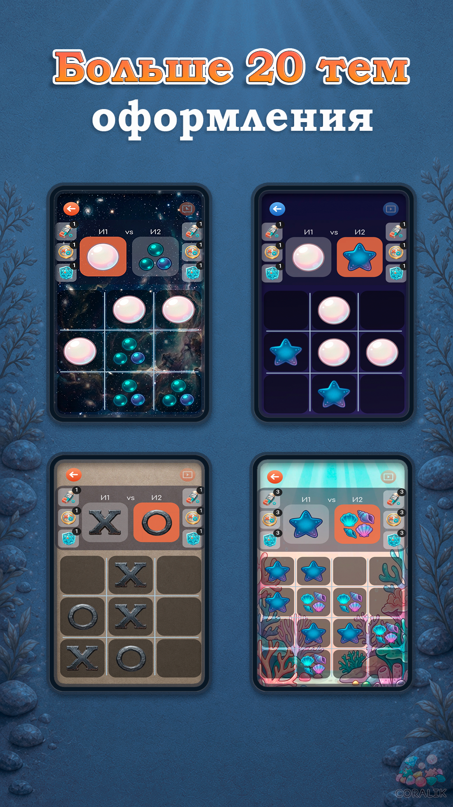
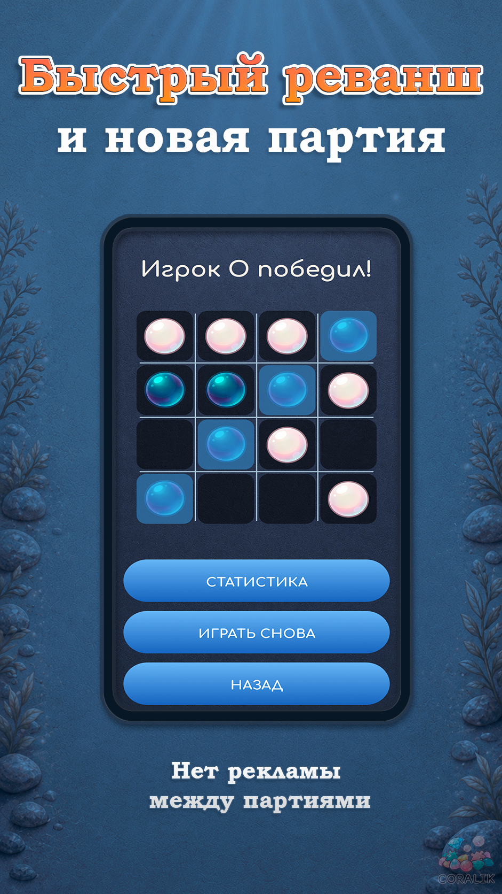

Крестики-нолики 2.0
Знакомая игра с полями 3×3 и 4×4, дополнительными ходами, исчезающими фишками, игрой против ИИ или вдвоём на одном экране.

Что есть в игре
Классический и расширенный режим
Играйте по знакомым правилам или используйте дополнительные возможности, которые меняют ситуацию на поле.
Поля 3×3 и 4×4
Выбирайте компактную партию или большее поле, где требуется больше расчёта и тактики.
Специальные действия
Убирайте фишки соперника, меняйте фишки местами и временно замораживайте ходы.
Исчезающие фишки
Следите за порядком ходов и заранее учитывайте, какая фишка исчезнет следующей.
ИИ или игра вдвоём
Тренируйтесь против компьютера или играйте на одном устройстве вместе с другом.
Офлайн и без покупок
Все функции доступны сразу. Игра работает без интернета и не требует подписки.
Скриншоты




Частые вопросы
Как работают дополнительные механики?
Во время партии можно убирать фишки соперника, менять фишки местами и замораживать ход. В отдельном режиме старые фишки постепенно исчезают.
Можно ли играть без интернета?
Да. Игра полностью работает офлайн.
Нужно ли платить за темы или бонусы?
Нет. Встроенных покупок и платных подписок нет. Все функции доступны сразу.
Можно ли настроить внешний вид?
Да. Можно выбрать фон, оформление поля и стиль крестиков и ноликов.